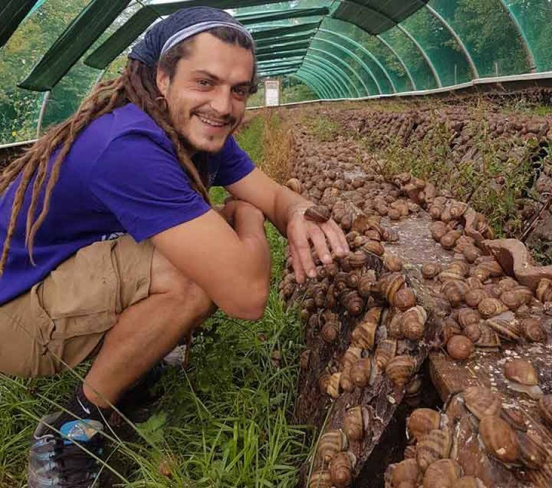
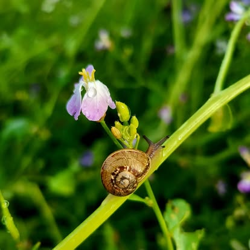
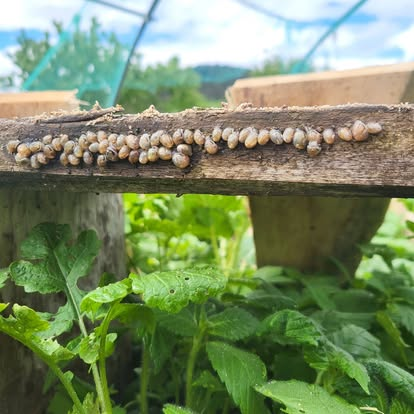

Accueil / L'élevage
L'élevageUne ferme à escargots au pied du Suc de Saussac
Des parcs en plein air, un seul éleveur et une saison qui suit le rythme des escargots, du printemps jusqu'aux premières gelées.
Les « sucs », ce sont ces anciens volcans arrondis qui dessinent tout le paysage autour d'Yssingeaux.

Tout est parti d'une passion
Florian Peyroche s'est pris de passion pour l'escargot avant d'en faire son métier. En 2018, il crée la Coquille des Sucs sur un terrain situé entre Yssingeaux et Bessamorel, sur l'ancienne RN 88, juste au pied du Suc de Saussac.
Il y monte lui-même ses parcs : 270 m² sous serres et filets d'ombrage, de quoi accueillir quelque 70 000 escargots gros gris. Le reste du travail se fait à la main, au fil des saisons : semer la végétation des parcs, nourrir, arroser, ramasser, puis cuisiner.
L'idée n'a pas changé depuis le premier jour : proposer un escargot élevé ici, en Haute-Loire, et le vendre en direct à ceux qui vont le manger.
Une saison au rythme des escargots
L'escargot vit au ralenti l'hiver et s'active dès que la douceur revient. Toute l'année de l'élevage suit ce calendrier.
- 1Printemps
Reproduction et ponte
Les reproducteurs se réveillent, s'accouplent et pondent leurs œufs dans une terre meuble. Quelques semaines plus tard, les petits escargots éclosent.
- 2Fin de printemps
Mise en parc
Les jeunes rejoignent les parcs extérieurs, où une végétation fraîche a été semée pour eux, à l'abri du soleil sous les filets d'ombrage.
- 3Été
Croissance au grand air
Herbes du parc, complément alimentaire bio et arrosage à l'eau de source : l'escargot grossit tranquillement pendant tout l'été.
- 4Fin d'été
Le ramassage
Quand la coquille est « bordée », c'est-à-dire que son bord s'est durci, l'escargot est adulte. On le ramasse à la main, parc par parc.
- 5Automne & hiver
En cuisine
Préparation, cuisson, farce, mise en bocaux et surgélation : c'est le moment où naissent les coquilles, croquilles, salmis et bocaux au court-bouillon.


Pourquoi un escargot élevé en France, ça compte
On l'ignore souvent, mais la grande majorité des escargots vendus en France, y compris ceux dits « de Bourgogne », sont ramassés ou élevés à l'étranger avant d'être cuisinés ici.
À la Coquille des Sucs, nous élevons le gros gris (Helix aspersa), une espèce qui se prête bien à l'élevage. Sa chair est tendre et son goût franc. Surtout, vous savez exactement d'où il vient : des parcs que vous pouvez venir visiter.
En bref
- Yssingeaux, Haute-LoireAu pied du Suc de Saussac, à 950 m
- Depuis 2018Un élevage créé et tenu par Florian Peyroche
- En directMarché, vente à l'élevage, magasins de producteurs
Envie de voir tout ça de près ?
Les parcs se visitent sur réservation. Florian vous montre chaque étape, de la ponte au bocal.